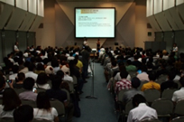
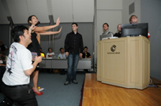

TOP PAGE EXHIBITOR INFO SENSE OF WONDERNIGHT / Previous SOWN
SENSE OF WONDER NIGHT

-
Organized by
Computer Entertainment Supplier's Association / Nikkei Business Publications, Inc.
Cooperation by
International Game Developers Association Japan Chapter (IDGA Japan)
PREVIOUS SOWN
SOWN2011(The 4th Annual)
Total of 10 presentation works picked from application 74 in total is carried out at previous event. Approximately 250 people have attended , and the venue at the selection has taken place in the prosperity with an international atmosphere.
- 


- 